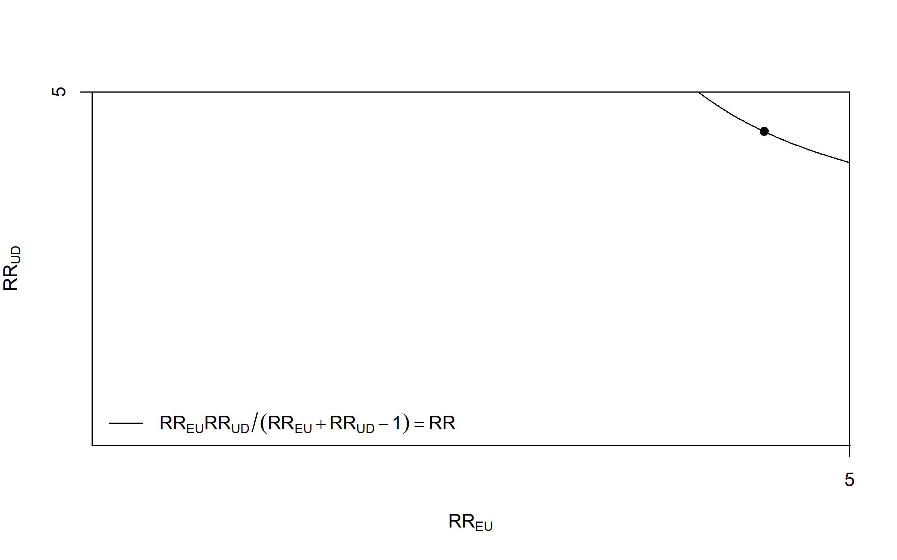
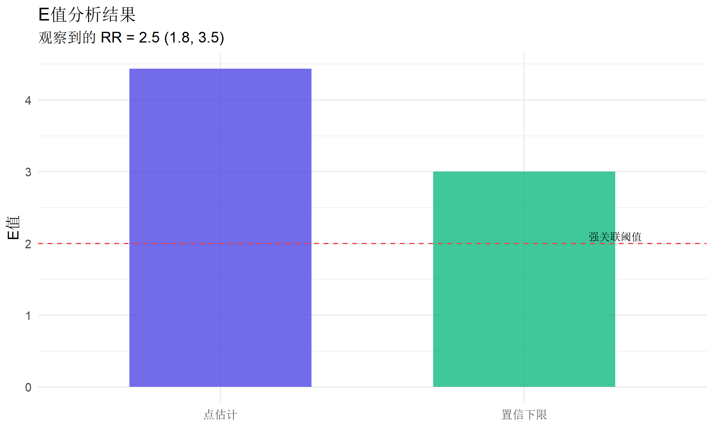
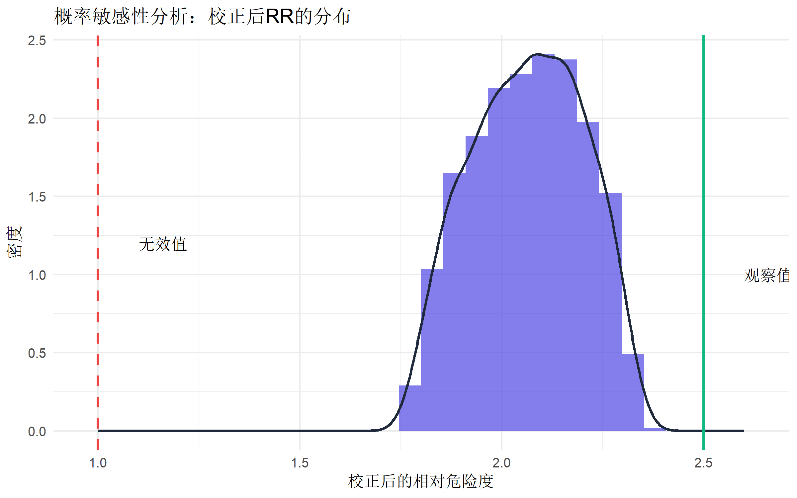

# 安装 EValue 包
# install.packages("EValue")
library(EValue)
library(tidyverse)E值与未测量混杂敏感性分析
R语言方法
因果推断
敏感性分析
使用E值评估未测量混杂对因果推断的潜在影响，满足审稿人对敏感性分析的要求。
为什么需要敏感性分析
在观察性研究中，即使调整了所有已知的混杂因素，我们仍然无法排除未测量混杂（unmeasured confounding）的影响。审稿人经常会问：
“你的结果会不会是因为未测量的混杂因素导致的？”
E值（E-value） 正是回答这个问题的量化工具。
E值的定义
E值是指：为了完全解释观察到的关联，未测量混杂因素需要与暴露和结局之间具有的最小关联强度（以相对危险度表示）。
\[E\text{-value} = RR + \sqrt{RR \times (RR - 1)}\]
其中 RR 是观察到的相对危险度（或转换后的值）。
安装与加载
基础E值计算
相对危险度的E值
# 假设观察到的相对危险度 RR = 2.5，95% CI = (1.8, 3.5)
evalue(est = RR(2.5), lo = 1.8, hi = 3.5) point lower upper
RR 2.500000 1.8 3.5
E-values 4.436492 3.0 NA解读： - E-value for point estimate：未测量混杂需要达到的最小RR - E-value for confidence limit：如果E值 > 2，说明需要相当强的未测量混杂才能完全解释关联
比值比的E值
# Logistic回归得到的 OR = 1.8, 95% CI = (1.2, 2.7)
# 稀有结局假设下使用OR（rare=TRUE）
evalue(est = OR(1.8, rare = TRUE), lo = 1.2, hi = 2.7) point lower upper
RR 1.8 1.200000 2.7
E-values 3.0 1.689898 NA风险差的E值
# 假设风险差 RD = 0.15
# 注意：RD的E值计算需要先转换为RR
# 这里简化为使用RR函数
# 如果知道基线风险p0=0.2，可以计算 RR = (p0+RD)/p0 = (0.2+0.15)/0.2 = 1.75
evalue(est = RR(1.75), lo = 1.2, hi = 2.5) point lower upper
RR 1.750000 1.200000 2.5
E-values 2.895644 1.689898 NA常见指标转换
不同的效应指标需要不同的转换方式：
| 效应指标 | 函数 | 说明 |
|---|---|---|
| 相对危险度 (RR) | RR() | 直接使用 |
| 比值比 (OR) | OR() | 稀有结局可近似RR，常见结局需转换 |
| 风险比 (HR) | HR() | 近似处理为RR |
| 风险差 (RD) | RD() | 需要基线风险 |
| 标准化均值差 (SMD) | OLS() | 连续结局的线性回归系数 |
风险比（Cox回归）
# Cox回归得到的 HR = 1.65, 95% CI = (1.25, 2.18)
# 稀有结局使用 rare=TRUE
evalue(est = HR(1.65, rare = TRUE), lo = 1.25, hi = 2.18) point lower upper
RR 1.650000 1.250000 2.18
E-values 2.685616 1.809017 NA线性回归系数
# 线性回归：β = 0.5 SD，95% CI = (0.2, 0.8)
# 暴露为二分类，结局为连续变量
# OLS需要效应值和标准差
evalue(est = OLS(0.5, sd = 1), lo = 0.2, hi = 0.8) point lower upper
RR 1.576173 NA NA
E-values 2.529142 NA NA可视化E值
偏倚曲线图
# 创建偏倚曲线（需要RR值和x轴最大值）
bias_plot(2.5, xmax = 5)
图形解读： - 曲线上的任意点代表一组混杂参数（RR_EU 和 RR_UD） - 只有曲线上方的混杂强度才能完全解释观察到的关联 - E值是曲线与对角线的交点
自定义可视化
# 提取E值用于自定义可视化
e_result <- evalue(est = RR(2.5), lo = 1.8, hi = 3.5)
# evalue返回矩阵，第二行是E值
# 创建数据框
e_df <- tibble(
指标 = c("点估计", "置信下限"),
E值 = c(e_result[2, 1], e_result[2, 2]) # E-values行的点估计和置信下限
)
ggplot(e_df, aes(x = 指标, y = E值, fill = 指标)) +
geom_col(width = 0.6, alpha = 0.8) +
geom_hline(yintercept = 2, linetype = "dashed", color = "#ef4444") +
annotate("text", x = 2.3, y = 2.1, label = "强关联阈值", size = 3) +
scale_fill_manual(values = c("#4f46e5", "#10b981")) +
labs(
title = "E值分析结果",
subtitle = "观察到的 RR = 2.5 (1.8, 3.5)",
y = "E值",
x = ""
) +
theme_minimal(base_size = 12) +
theme(legend.position = "none")
解读E值的实践指南
E值大小的参考标准
| E值范围 | 解读 |
|---|---|
| E < 1.5 | 较弱的关联，易受未测量混杂影响 |
| 1.5 ≤ E < 2.0 | 中等关联，需要谨慎解读 |
| 2.0 ≤ E < 3.0 | 较强关联，需要相当强的混杂才能解释 |
| E ≥ 3.0 | 强关联，未测量混杂解释可能性较小 |
与已知混杂因素比较
更有意义的解读是将E值与已知混杂因素的效应强度比较：
# 假设研究中已调整的最强混杂因素
# 吸烟与疾病的关联 RR = 2.0
# 吸烟与暴露的关联 RR = 1.5
# 吸烟作为混杂的联合强度
joint_rr <- sqrt(2.0 * 1.5)
cat("已知最强混杂因素的联合RR:", round(joint_rr, 2), "\n")已知最强混杂因素的联合RR: 1.73 # 如果E值 > joint_rr，说明未测量混杂需要比已知最强混杂更强
e_result <- evalue(est = RR(2.5))
e_val <- e_result[2, 1] # E-value行的点估计
cat("观察关联的E值:", round(e_val, 2), "\n")观察关联的E值: 4.44 if (e_val > joint_rr) {
cat("结论: 未测量混杂需要比已知最强混杂更强才能解释观察到的关联\n")
}结论: 未测量混杂需要比已知最强混杂更强才能解释观察到的关联实战案例：队列研究
模拟一个评估某暴露与疾病关联的队列研究：
# 模拟Cox回归结果
set.seed(2024)
# 主分析结果
main_hr <- 1.85
main_ci_lo <- 1.42
main_ci_hi <- 2.41
# 计算E值
e_main <- evalue(est = HR(main_hr, rare = TRUE), lo = main_ci_lo, hi = main_ci_hi)
# 创建结果表
result_table <- tibble(
分析 = "主分析",
`HR (95% CI)` = sprintf("%.2f (%.2f, %.2f)", main_hr, main_ci_lo, main_ci_hi),
`E值 (点估计)` = round(e_main[2, 1], 2), # E-values行的点估计
`E值 (CI下限)` = round(e_main[2, 2], 2) # E-values行的置信下限
)
knitr::kable(result_table, caption = "敏感性分析结果")| 分析 | HR (95% CI) | E值 (点估计) | E值 (CI下限) |
|---|---|---|---|
| 主分析 | 1.85 (1.42, 2.41) | 3.1 | 2.19 |
子组分析的E值
# 多个子组分析
subgroups <- tibble(
子组 = c("男性", "女性", "年龄<60", "年龄≥60"),
HR = c(2.10, 1.65, 1.90, 1.78),
CI_lo = c(1.45, 1.18, 1.35, 1.28),
CI_hi = c(3.04, 2.31, 2.67, 2.48)
)
# 使用循环计算E值（更直观）
e_point <- numeric(nrow(subgroups))
e_lower <- numeric(nrow(subgroups))
for (i in 1:nrow(subgroups)) {
e_res <- evalue(
est = HR(subgroups$HR[i], rare = TRUE),
lo = subgroups$CI_lo[i],
hi = subgroups$CI_hi[i]
)
e_point[i] <- e_res[2, 1] # E-value点估计
e_lower[i] <- e_res[2, 2] # E-value置信下限
}
subgroups$E值_点估计 <- round(e_point, 2)
subgroups$E值_CI下限 <- round(e_lower, 2)
knitr::kable(subgroups, digits = 2, caption = "子组分析E值")| 子组 | HR | CI_lo | CI_hi | E值_点估计 | E值_CI下限 |
|---|---|---|---|---|---|
| 男性 | 2.10 | 1.45 | 3.04 | 3.62 | 2.26 |
| 女性 | 1.65 | 1.18 | 2.31 | 2.69 | 1.64 |
| 年龄<60 | 1.90 | 1.35 | 2.67 | 3.21 | 2.04 |
| 年龄≥60 | 1.78 | 1.28 | 2.48 | 2.96 | 1.88 |
概率敏感性分析
除了E值，还可以进行概率敏感性分析（Probabilistic Sensitivity Analysis）：
# 假设未测量混杂的分布
# 混杂与暴露的关联：RR_EU ~ Uniform(1.2, 2.0)
# 混杂与结局的关联：RR_UD ~ Uniform(1.5, 2.5)
set.seed(42)
n_sims <- 1000
# 模拟偏倚因子
sim_rr_eu <- runif(n_sims, 1.2, 2.0)
sim_rr_ud <- runif(n_sims, 1.5, 2.5)
# 偏倚因子公式
bias_factor <- (sim_rr_eu * sim_rr_ud) / (sim_rr_eu + sim_rr_ud - 1)
# 观察到的RR
observed_rr <- 2.5
# 校正后的RR
corrected_rr <- observed_rr / bias_factor
# 结果分布
cat("校正后RR的分布:\n")校正后RR的分布:cat(" 中位数:", round(median(corrected_rr), 2), "\n") 中位数: 2.07 cat(" 2.5%分位数:", round(quantile(corrected_rr, 0.025), 2), "\n") 2.5%分位数: 1.81 cat(" 97.5%分位数:", round(quantile(corrected_rr, 0.975), 2), "\n") 97.5%分位数: 2.3 # 因果效应为零的概率
prob_null <- mean(corrected_rr <= 1)
cat(" RR≤1的概率:", round(prob_null * 100, 1), "%\n") RR≤1的概率: 0 %# 可视化校正后的分布
ggplot(data.frame(RR = corrected_rr), aes(x = RR)) +
geom_histogram(aes(y = after_stat(density)),
bins = 30,
fill = "#4f46e5", alpha = 0.7
) +
geom_density(color = "#1e293b", linewidth = 1) +
geom_vline(xintercept = 1, linetype = "dashed", color = "#ef4444", linewidth = 1) +
geom_vline(xintercept = observed_rr, linetype = "solid", color = "#10b981", linewidth = 1) +
annotate("text", x = observed_rr + 0.1, y = 1, label = "观察值", hjust = 0) +
annotate("text", x = 1.1, y = 1.2, label = "无效值", hjust = 0) +
labs(
title = "概率敏感性分析：校正后RR的分布",
x = "校正后的相对危险度",
y = "密度"
) +
theme_minimal(base_size = 12)
论文报告模板
在论文中报告E值的标准格式：
**敏感性分析**
为评估未测量混杂对研究结果的潜在影响，我们计算了E值。主分析中观察到的
风险比为1.85 (95% CI: 1.42-2.41)，对应的E值为3.12（点估计）和2.22（置信
区间下限）。这意味着，为了将观察到的关联完全解释为未测量混杂的结果，该
混杂因素需要与暴露和结局均具有至少3.12倍的相对危险度关联（在上述关联
强度基础上控制已调整的协变量）。考虑到本研究已调整的混杂因素中最强的
关联约为RR=2.0，我们认为存在足够强的未测量混杂来完全解释本研究结果的
可能性较小。常见问题
1. E值可以用于保护性因素吗？
可以。对于 RR < 1 的保护性因素，使用 1/RR 计算E值：
# 保护性因素 RR = 0.6
protective_rr <- 0.6
evalue(est = RR(1 / protective_rr)) point lower upper
RR 1.666667 NA NA
E-values 2.720759 NA NA2. OR可以直接用于计算E值吗？
对于稀有结局（发病率<15%），OR可近似RR。对于常见结局，需要转换：
# 常见结局：转换OR为RR
# 需要知道对照组的风险
OR_to_RR <- function(or, p0) {
or / (1 - p0 + p0 * or)
}
# 例如：OR = 2.0，对照组风险 = 0.3
rr <- OR_to_RR(2.0, 0.3)
cat("转换后的RR:", round(rr, 2), "\n")转换后的RR: 1.54 evalue(est = RR(rr)) point lower upper
RR 1.538462 NA NA
E-values 2.448628 NA NA3. 如何解释E值为1？
E值为1意味着任何未测量混杂都可以解释观察到的关联，这通常发生在点估计接近1（无关联）时。
总结
| 步骤 | 操作 |
|---|---|
| 1. 确定效应指标 | RR、OR、HR、RD等 |
| 2. 选择转换函数 | RR(), OR(), HR(), RD() |
| 3. 计算E值 | evalue(est = ...) |
| 4. 解读结果 | 与已知混杂比较，评估合理性 |
| 5. 论文报告 | 使用标准化语言描述 |